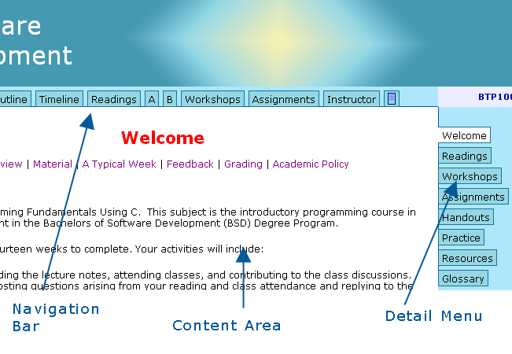
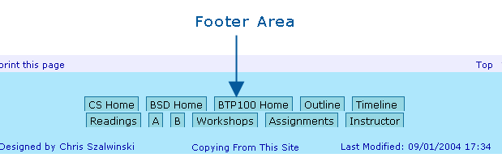
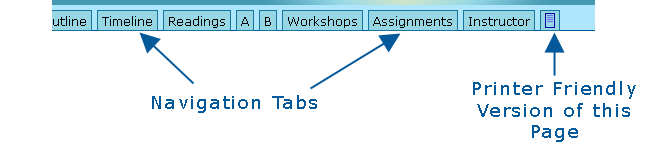
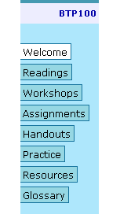
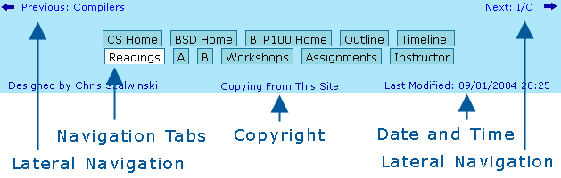
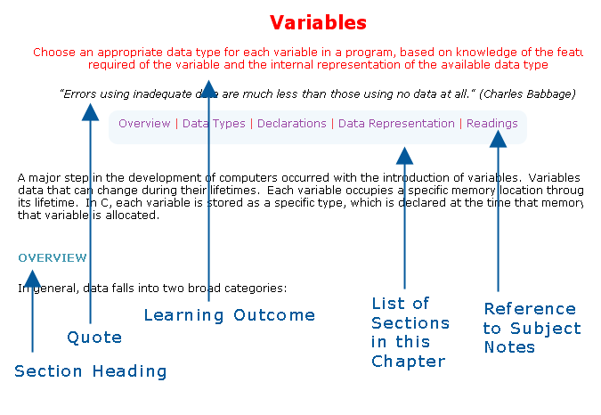

Welcome to BTP100
Grading |
Web Page Format |
Content |
Expectations |
Academic Policy
BTP100 covers the fundamentals of
computer programming. A comprehensive subset of the
C language is used as the programming language throughout
this subject. Upon successful completion, you will be able
to write command-line solutions to an unlimited number of small,
but nevertheless, real-world problems.
The subject web site contains all of the material that
you need to master. The complete URL of its home page
is
The home page contains general information as well as day-to-day reminders
and notes. Bookmark this page and check it regularly.
This web site was originally developed from a now superceded edition of the
supporting subject notes. You can obtain the most recent
edition of these notes at the Seneca@York Bookstore
- Weaver, Evan (2003). "Foundations of Programming Using C". Seneca College.
The web site and the subject notes present just enough syntax
to cover the fundamentals of programming, yet not so much as to
distract you with advanced or obscure topics. If you use the
web site and the subject notes as your primary resources, you
should have enough time to read all of the material
without skipping parts and to practice solving a fair number of
problems throughout the semester.
You may find this subject quite demanding, especially if you have no
programming experience. But, you should be able to master
all of the material if you participate fully in the:
- Lectures and Class Discussions: where we discuss the material
in the readings.
- Workshops: where we solve small problems that implement concepts
introduced in the readings.
- Assignments: where you work on projects that integrate the topics covered
in the readings.
- Presentation: where you present the work of your team on a
problem of your choosing.
Keeping up with the readings, the workshops and the assignments is crucial
to success in this subject. Catching up may require substantial
if not massive effort. Those students who have done poorly
have often attributed their performance to having fallen behind
early in the semester. Heed their experience and keep up with
the schedule from the start.
This subject web site evolves. If you have any suggestions
on how it could be improved, please feel free to let your
instructor know. Many student suggestions have been incorporated
since the initial posting.
Grading Policy
You can find the official subject outline with the
approved outcomes here.
To pass this subject, you must:
- pass the final exam,
- pass the total of all assessments,
- submit all assignments in working order, and
- pass a weighted average of the tests and the final exam.
A pass is a mark of 60% or better. The total mark
is a weighted combination. The weights are:
- Workshops 9%
- Assignments 20%
- Quizzes 6%
- Tests 30%
- Presentation 5%
- Exam 30%
The workshop and presentation marks measure team
performance (14%). The other marks measure individual
performance (86%).
Workshops
Your workshops will be graded according to the following rubric.
|
Grade
|
Description
|
Key Features
|
|
Pass (1.0)
|
Code solves the stated problem, the solution
is tested, a sample run is included and the
solution is submitted on time
|
Problem solved on time
|
|
Marginal (0.5)
|
Code solves the stated problem, the solution
is not tested or a sample run is not included
|
Problem solved on time, sample run missing
|
|
Fail (0)
|
No solution submitted on time or
the solution submitted does not solve the stated
problem, no tests, no sample run
|
Inadequate or late solution
|
Assignments
Your assignments will be graded to the
following detail standards and rubric.
- Submission instructions on the
assignment specifications are followed
- A copy of an unedited phobos typescript
is submitted
- There are no global variables
- There are no jump statements (goto, continue or
break except for break in switch statements)
- All variable and function
names are descriptive
- Source files begin with a header comment.
The comment includes
- the assignment name and number
- a brief description of the assignment
- the name of the source file
- your name
- date last modified
- The meaning of each variable, including its
units, constraints and other details is clarified
in inline comments. Only additional information
is provided here: the declaration is not repeated in words
- Code is indented consistently throughout to
reveal the structure of the logic
- There are no spelling errors in the comments,
names or strings
- There are no magic numbers: Name constants in
CAPITALS. (For example, use #define PI 3.14159
at the head of the code and use PI throughout
the code.) Use _ between words in constant
names.
- Each function has a single entry point and
a single exit point
- Functions and blocks of code within them
are separated using blank lines
- The purpose of each function and its return
value, if any, is described
You will receive a deduction of 0.5 for each
breach of these detail standards, within the limits
described below.
|
Grade
|
Description
|
Key Features
|
|
Excellent (10)
|
Complete solution without logic errors, well
documented and easy to read. Meets detail
standards
|
Ready to deploy to another programmer
|
|
Good (7)
|
Complete solution possibly with some minor logic
errors, self-documentation could be improved.
Fails to meet a few detail standards
|
Workable, but needs
noted corrections
|
|
Marginal (4)
|
Complete solution with major logic
errors, needs self-documentation.
Fails to meet detail standards
|
Workable, but needs major revisions
|
|
Fail (0)
|
No solution or partial solution with major flaws,
no documentation
|
Barely workable, if at all.
Does not meet specifications.
|
A late penalty of 10% per school day
applies to submissions after the due date.
Each weekday during study week is a school day.
Team Presentation
Your presentation will be graded according to the following rubric.
|
Grade
|
Description
|
Key Features
|
|
Excellent (5)
|
Complete solution without errors,
well-documented and well-tested, issues noted
|
Ready to deploy to another team
|
|
Good (4)
|
Complete solution possibly with minor errors,
self-documentation could be improved, testing
could be more thorough
|
Needs some more work
before deployment
|
|
Marginal (2)
|
Complete solution with major errors, needs
self-documentation and thorough testing
|
Needs major work. Not ready for deployment
|
|
Poor (1)
|
Partial solution with major flaws, no documentation,
no testing
|
Inadequate effort
|
Tests and Final Exam
Your test and exam answers will be graded according to the following rubric.
|
Grade
|
Description
|
|
Excellent (10)
|
Complete solution without minor logic errors,
well-documented and easy to read
|
|
Good (8)
|
Complete solution with some logic minor
errors, documentation could be improved
|
|
Marginal (6)
|
Complete solution with major errors, needs
documentation
|
|
Inadequate (3)
|
Overview of solution structure in pseudocode
or flow charts
|
|
Fail (0)
|
No solution submitted
|
You will receive a deduction of 0.5 marks for each minor
error and a deduction of 1 mark for each major error.
Web Page Format
Each web page includes a banner, a navigation
bar immediately below the banner, a content area below the
navigation bar, a detail menu to the right of the content
area and a footer immediately below the content area.


Areas of a BTP100 Web Page
Figure 1
The navigation bar provides tab access to the
different pages of this site
and, where available, a printer friendly version
of the current page.

Navigation Bar
Figure 2
The detail menu to the right of the content area
links directly to
- this welcome page,
- the list of readings,
- the list of workshops,
- the list of assignments,
- the list of handouts,
- the list of practice problems,
- the list of resources, and
- the glossary page.
This menu expands to reveal links
to subordinate pages. For example, if
you select readings, the detail menu shows
each of the readings; if you select workshops,
the detail menu shows each of the workshops.
|

Detail Menu
Figure 3
|
The footer includes links for navigating laterally and
vertically through the site. The footer also includes
the date and time of the most recent modification
to the current page and a link to copyright information.

Footer
Figure 4
Content
Readings
The subject material appears on separate pages
called readings. Each reading has the
same format as shown in Figure 5 below. The learning
outcome appears directly below the title.
An appropriate quote may appear below the outcome.
Below these is a list of the sections in the reading.
Select a section to move directly to that part of the reading.
The exercise section lists, the
related workshop problem, if any,
the related pages in the
supporting subject notes and suggested exercises. If you need
another view of the material try one of the links on
the tutorials page off the resources page.

A Reading
Figure 5
The readings are organized into nine (9)
distinct modules:
- introduction
- computation
- logic
- functions
- libraries
- arrays
- strings
- files
- design
Each reading introduces one concept,
outlines the theory associated with that concept and
illustrates the concept using sample code.
Typically, one lecture covers one reading.
You might find it helpful to bring a printed
copy of the day's reading to class and to mark
it up during the discussions.
Workshops
Each workshop contains a
selection of problems of varying difficulty.
These problems apply the concepts introduced in
the week's readings. Join a team and select
a problem that is different from those most chosen by
other teams. Submit your team's solution
to the workshop before the end of the weekend.
Expectations
You may:
- ask any questions you have regarding
your own progress in the subject,
- have your opinion heard if you disagree with
the view of a student or your instructor, and
- correct the mistakes of your instructor
You may expect to:
- have access to up-to-date web pages on
the evening of the day before a scheduled lecture
or workshop
- receive email replies from your instructor
within 24 hours except on weekends
- have your marks posted no later than
two weeks after the submission date
- be treated fairly in regard to any penalties
- receive special consideration if you cannot write a
scheduled test or submit an assignment on time because of
a medical or extraordinary situation
- receive additional help if you encounter difficulty
- receive feedback regarding your assignment submissions within one week
If your instructor has not notified you about your submission
within a week, feel free to ask about it.
There are times when something happens in
the transmission and your instructor may need you to resubmit
your work.
If, in the view of your instructor, you
are having a problem, your instructor will ask you to arrange
a private meeting. Problems may involve marginal attendance,
missing assignments, or lack of communication with others. The
instructor will try to help you determine why you are having
difficulty and how you can improve your standing.
ACADEMIC POLICY
The Academic Policy of Seneca College
applies to the School of Computer Studies.
Cheating, plagiarism and breach of copyright
are serious offenses under this Policy. The official version of the
Cheating and Plagiarism Section is here.
Cheating
Cheating during a test or exam is construed as
talking, peeking at another student’s
paper or any other clandestine method of
transmitting information.
Plagiarism
Plagiarism is using the work of others without
citing it; that is, holding the work of others out as
your own work.
Do not submit an assignment that contains
material copied from another student, a
website, a textbook or any other published
source without identifying the material
that is not your own.
Simple rewording of someone else's submission
or changing the field names in their program
and presenting their work as your own may be
construed as plagiarism: you are still copying
the solution and submitting it as your own.
Plagiarism is not excusable by trivial differences
in the code or the wording.
Assignments
are individual work. If your instructor
notices that you have copied parts of your
submission from another student or external
source without citation, your instructor
may charge you with plagiarism.
Studying and improving others’ code is
a good way to learn. You may imitate and
dissect the sample code in the subject web
site and the printed subject notes. You
may use this code in your submissions,
including your assignments.
You do not need to cite the authors of
the code that you have copied
from the printed subject notes or this web site.
You may copy the workshop code of your peers provided
that you cite them as the authors. All other
code should be entirely your own.
How Not To Plagiarize
To avoid plagiarizing:
- If you are the helper, set aside
your notes, printouts and similar materials.
Study your colleague's screen or printout and
work with them on their problem using their
approach. Help them debug their code.
Do not show them how you did it.
- If you are the person being helped,
your objective is to understand the problem.
Don’t just ask for the answer or look
at your colleague's solution.
Remember, you will need a good level of
understanding to do well on the exam.
Breach of Copyright
If you photocopy a textbook without the copyright holder's permission,
you violate copyright law.
|